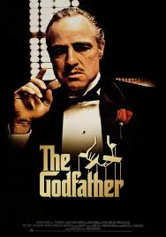
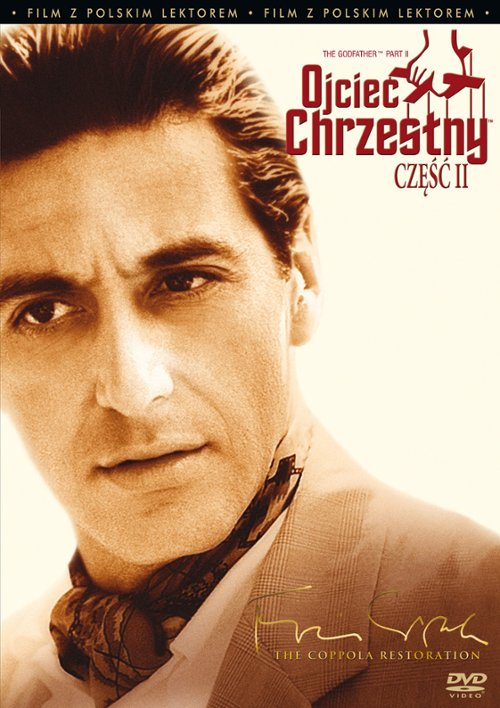
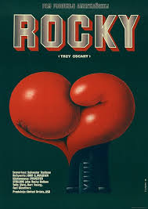
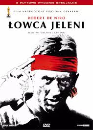
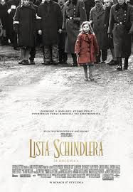
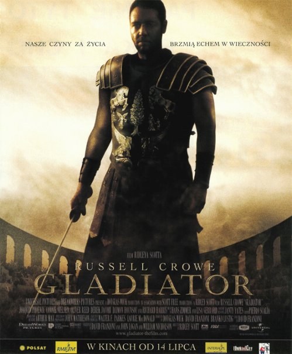
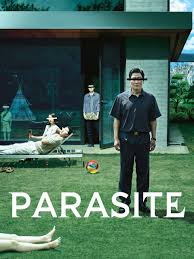
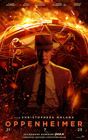

|  |
Ojciec chrzestny (1972) oskar(1974) |
Don Vito Corleone (Marlon Brando) jest Ojcem Chrzestnym nowojorskiej rodziny mafijnej. Jest tyranem i szantażystą, a zarazem człowiekiem honoru, sprawującym rządy żelazną ręką. Jego decyzje mają charakter ostateczny i nie ma od nich odwołania, a jego nazwisko otwiera wszystkie drzwi i budzi prawdziwy respekt |
|  |
Ojciec chrzestny 2 (1974) oskar(1975) |
Kontynuacja słynnego filmu o życiu włoskiej rodziny gangsterskiej. Po śmierci Vita Corleone (Marlon Brando) jego miejsce zajmuje syn Michael (Al Pacino), który - uciekając do intryg i morderstw - zapewnia klanowi dominację. Nie ma on jednak tak wielkiej charyzmy jak ojciec. |
|  |
Rocky (1976) oskar(1977) |
Rocky Balboa (Sylvester Stallone) jest pochodzącym z Włoch pięściarzem-amatorem, walczącym w podrzędnych klubach. Tymczasem mistrz świata wagi ciężkiej - Apollo Creed (Carl Weathers) zamierza walczyć w pokazowym pojedynku. Z powodu kontuzji jego przeciwnika, Creed zmuszony jest poszukać następcy. |
|
Annie Hall (1977) oskar(1978) |
Alvy Singer, czterdziestoletni nowojorski neurotyczny komik, usiłuje podsumować dotychczasowe życie: dzieciństwo, praca, dwa nieudane małżeństwa, spotkanie – i rozstanie – z fascynującą Annie Hall. Poznali się kiedyś na kortach tenisowych, spodobała mu się jej energia, niezależność, ale i swoista uległość. |
|  |
Łowca jeleni (1978) oskar(1979) |
Michael, Nick i Steven przygotowują się do wyjazdu na wojnę w Wietnamie. Przed odlotem Steven postanawia wziąć ślub. Na miejscu trafiają do niewoli, gdzie Wietnamczycy zmuszają ich do gry w rosyjską ruletkę. |
|  |
Lista Schindlera (1993) oskar(1994) |
Oskar Schindler jest poważanym niemieckim przemysłowcem, który podczas II wojny światowej jest właścicielem dużej fabryki, w której w nieludzkich warunkach pracują Żydzi. Widząc cierpienie tych ludzi zaczyna ratować ich przed śmiercią w obozach koncentracyjnych. Film oparty jest na prawdziwej historii Oskara Schindlera, który podczas wojny ocalił przed śmiercią około 1100 ludzkich istnień |
|
Forrest Gump(1994) oskar(1995) |
Forrest jest małym chłopcem, kiedy jego ojciec porzuca rodzinę, a matka utrzymuje siebie i syna biorąc pod swój dach lokatorów. Kiedy okazuje się, że jej chłopiec ma bardzo niski iloraz inteligencji, pozostaje nieustraszona w swoim przekonaniu, że ma on takie same możliwości, jak każdy inny. |
|  |
Gladiator(2000) oskar(2001) |
Rzymski generał Maximus, skazany na śmierć przez pretendenta do tronu imperium, cudem uchodzi z życiem z zastawionej na niego pułapki. Pojmany przez handlarza niewolników, poddany morderczemu treningowi, zostaje gladiatorem. |
|  |
Parasite(2019) oskar(2020) |
Kierowca bez pracy, gospodyni bez domu, student bez kasy i dziewczyna bez perspektyw wspólnie stworzą perfekcyjny plan: jak w najkrótszym czasie stać się kimś i zająć miejsce bogaczy. |
|  |
Oppenhaimer(2023) oskar(2024) |
Opowieść o amerykańskim geniuszu - fizyku J. Robercie Oppenheimerze, który podczas II wojny światowej dowodził sekretnym Projektem Manhattan w Ameryce. Jego efektem było wynalezienie bomby atomowej. Śmiercionośna broń miała zakończyć wojnę, zatrzymać Hitlera i Niemców. |